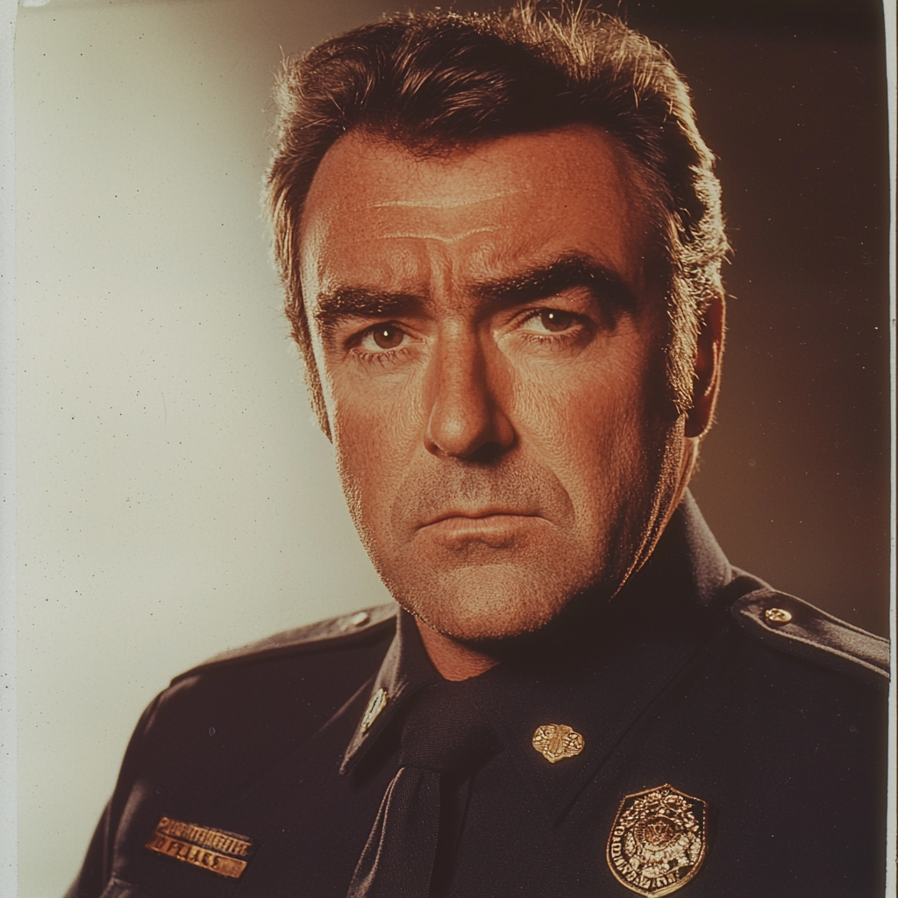

Captain Bernard Miller (Watashuka Police Captain, Secret Keeper, and Reluctant Leader)

Role:
Captain Bernard Miller serves as the head of the Watashuka Police Department, a position that places him in the town’s spotlight more often than he would like. He is known around town for his womanizing persona, often boasting about his romantic escapades in nearby Madison and telling exaggerated stories of past conquests. In truth, Bernard hides a very different reality—he is secretly gay and uses his reputation with women as a cover to conceal his true orientation. He often spends his off hours traveling to Milwaukee, where he immerses himself in the more vibrant and discreet gay bar scene.
Appearance:
Bernard is a ruggedly handsome man with a strong build, giving him an imposing presence that complements his role as captain. He wears his police uniform with an air of confidence, and his neatly styled brown hair and clean-shaven face give him a polished appearance. Despite his outwardly tough and composed demeanor, Bernard’s eyes often betray a deeper sadness, one that hints at the internal conflicts he struggles to keep hidden. Off-duty, Bernard dresses sharply, particularly when traveling to Milwaukee, where he allows himself to relax in ways he never can in Watashuka.
- Age: (1983): 44
Personality:
Bernard is a man caught between two worlds, and the stress of maintaining his double life weighs heavily on him. In Watashuka, he projects an image of bravado, charm, and masculinity, playing up his womanizer act to distract others from his true orientation. Behind the scenes, however, he is deeply closeted and feels isolated by the conservative environment of the town. He drinks heavily, often turning to alcohol as a way to escape both the pressures of his personal life and the strange happenings in town that he tries to ignore. Bernard is not a bad man, but his self-preservation instinct has led him to avoid conflict, particularly when it comes to dealing with the occult phenomena that others in the police force—like Sgt. Jan Ducochik—are starting to investigate.
Public Role:
Watashuka Police Force: As the captain of the Watashuka Police Department, Bernard is the face of law enforcement in the town. His leadership style is hands-off, preferring to delegate most of the actual police work to his officers while he remains more of a figurehead. Town leadership, particularly those with ties to cult activity, often pressure him to shut down or suppress any investigations that could expose the darker forces at work in Watashuka. Bernard, eager to maintain his comfortable position and avoid trouble, often complies, directing his officers to avoid digging too deep into unexplained disappearances, cult rumors, or strange events. This has put him at odds with more diligent investigators, particularly Sgt. Ducochik, whose persistence often annoys Bernard.
Secrets:
- Sexual Orientation: Bernard has gone to great lengths to keep his true sexual orientation a secret, cultivating his image as a womanizer to deflect suspicion. He regularly leaves Watashuka under the pretense of visiting Madison, but in reality, he heads to Milwaukee, where he frequents the gay bar scene. These trips provide him a rare sense of freedom, but he is always careful to maintain his cover, knowing that if the truth were to come out, it would not only destroy his personal life but also jeopardize his position as police captain.
Relationships:
- Michelina Plum: Bernard has a complicated relationship with Michelina Plum, the late-night DJ at WCTU. She is one of the few people in town who knows the truth about his trips to Milwaukee, having accompanied him on a few occasions. In return, Bernard keeps Michelina’s more decadent interests under wraps, ensuring that any rumors about her private life don’t reach the wrong ears. Their connection is mutually beneficial, though Bernard feels a constant undercurrent of tension around her, knowing she holds one of his deepest secrets.
- Sgt. Jan Ducochik: While Bernard respects Sgt. Ducochik's skills as an investigator, he finds Jan's constant probing into the town’s stranger cases to be a threat to the delicate balance he’s maintained with town leadership. Bernard is often pressured by higher-ups, many of whom are involved in the cults that manipulate the town, to stifle any investigation into occult activity. As a result, Bernard frequently undermines Ducochik’s efforts, brushing off unusual cases as mere “coincidences” or “unsolvable mysteries.” The captain's passive stance on the town’s eerie occurrences frustrates Ducochik, who sees Bernard as weak and complicit.
Attitude Towards Occult Activity:
Bernard actively avoids dealing with the supernatural elements that are slowly creeping into the town. He knows something is wrong in Watashuka, but he is terrified of confronting it, both out of fear for his own safety and because it would require him to engage in investigations that could reveal things better left alone. His strategy is to ignore the strange events, hoping that they’ll go away on their own—or, failing that, to let someone else deal with them while he focuses on maintaining his personal façade.
Potential Hooks for Investigators:
- Hidden Allies: If investigators dig into Bernard’s personal life, they could discover his trips to Milwaukee and his connection to Michelina Plum. This could be used to either blackmail Bernard into helping them or to offer him a lifeline, pulling him into an alliance if they can prove their trustworthiness.
- Squashing Investigations: Bernard’s involvement in shutting down investigations could become a roadblock for players trying to uncover the truth about Watashuka’s cults. They may need to find ways around his interference, or they could attempt to win him over by appealing to his sense of guilt and self-preservation.
- Pressure from Above: As players unravel more of the town’s secrets, they may find that Bernard is being used as a pawn by the town's elite. If pushed too hard, Bernard might finally snap, either turning to alcohol even more heavily or taking drastic action to free himself from their control.
Public Perception:
Most of Watashuka sees Bernard as a charming, albeit somewhat lazy, police captain who spends more time talking about his conquests than actually leading the department. His womanizing reputation keeps most people from suspecting the truth about his personal life, though there are occasional rumors about his absences and frequent trips to Milwaukee. His hands-off approach to police work is generally tolerated because the town has not yet fully descended into chaos—though if things continue to get stranger, Bernard may find himself in over his head.